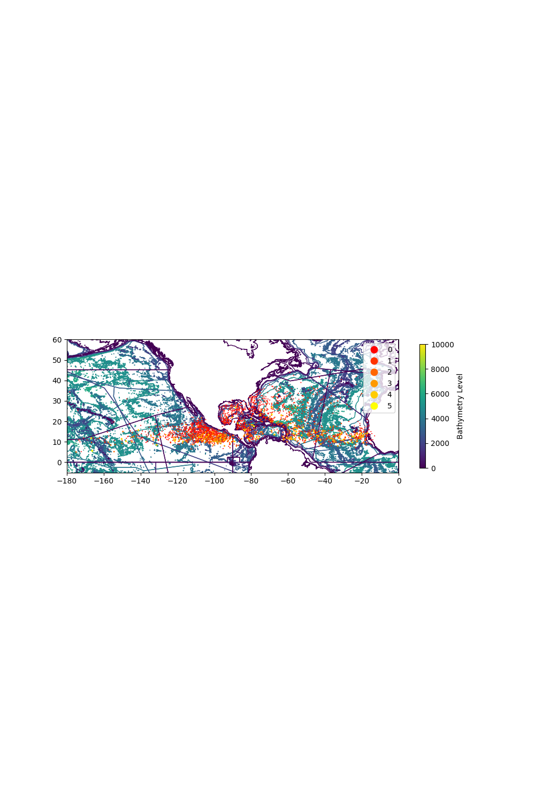

Bathymetry and Storms
Introduction
The relationship between bathymetry and storms is very important. Bathymetry is the topography of the ocean floor.
Storms can be
devastating environmentally and economically and understanding where and how different
storms occur is vital to mitigate their effects. There is existing research on how storms may
impact bathymetry and vice versa but there needs to be more analysis as these
relationships are not fully understood. Especially with climate change being such an
imminent and current threat, understanding the change and effects of bathymetry on
storms is very important. Climate change on its own has increased the frequency and
intensity of storms, so it is increasingly interesting to analyze the differences that climate
change has made to bathymetry the last years.
For more information and previous research on the relationship between bathymetry and storms,
you can read this paper on morphological changes of a sandy inlet as a result of storms and read this
paper on Coastal Storm Surge resiliency.
Introduction to the Data
This analysis uses two datasets. The first is a dataset of hurricanes from . Although the dataset has data from the last few hundred years,
this was restricted to the last 100 years to make analysis more straighforward. This was about 2500 hurricanes. The dataset contained the following
variables that were used for analysis:
| Variable Name |
Details |
| Name |
Name of Storm |
| Maximum Wind |
Maximum Wind Speed of Storm |
| Date |
Date of Storm |
| Location |
Starting Location of Storm |
| Minimum Pressure |
Minimum Pressure of the Storm |
The second dataset that was used was a geographical bathymetric data set from Natural Earth.
This dataset contained the nested polygons of the bathymetric boundary lines.
Storm Geospatial Distribution
This first visualization is an interactive map of the of hurricanes. It provides an overview of the geospatial distribution of
storms including what bathymetric levels they start in.
In this interactive map, you can explore the geospatial distribution of storms and hover over and click each storm point and see information
including the name, max wind speed and minimum pressure of the storm.
Now, let's take a look at the distribution of storms and their category ranks. From the maximum wind information, each storm
was classified into a hurricane category rank, 0 to 5 with 5 being the strongest, according to the Saffir-Simpson Hurricane Wind Scale.

This is a map showing the locations and category ranks of the recorded hurricanes in the past hundred years near North America. They
are generally concentrated closer to the equator. The different category rank storms are somewhat evenly distributed, however, there are
a greater number of stronger storms that occur in deeper bathymetric levels.
Bathymetric Levels and Storm Traits
This bar plot displays the storm counts for the different bathymetric values from 0 to 6000 meters. There is a clear spike at the
200 meter bathymetric level, whereas at the greater bathymetric values around 5000-6000 meters, there are very little storms.
The following plot explores the impact of bathymetric levels on the strength of storms by looking at the distributions
of maximum wind for storms in each level. The distributions are relatively similar across the bathymetric levels with a median
around 60 mph. The 4000 level stands out for its wider distribution and the 6000 level stands out for its shift up, having a median
over 100 mph. This points to the implication that greater bathymetric levels could cause stronger storms.
In this scatterplot, the amount and strength of the hurricanes is displayed for different months. It is clear that the majority
of the storms occur in the summer months. This holds true for all of the bathmyetric levels. The stronger hurricanes also occur
during the summer months. You can use the drop-down menu to display only the storms of the chosen category rank.
Summary and Future Work
The relationship between bathymetry and storms was analyzed in this visualization project. The overall trends
exemplified in the graphs were that stronger storms start in lower bathymetric levels, hurricanes are concentrated
around the 200m bathymetric level and hurricanes are more prevalent in summer months.
In the future, it would be interesting and valuable to extend this analysis to changes in bathymetry over the years and
different types of storms. It would also be interesting to compare this analysis to analysis of the impact of land topography
on landborne storms.
For any questions about this project feel free to email zemlyanker.d@northeastern.edu.